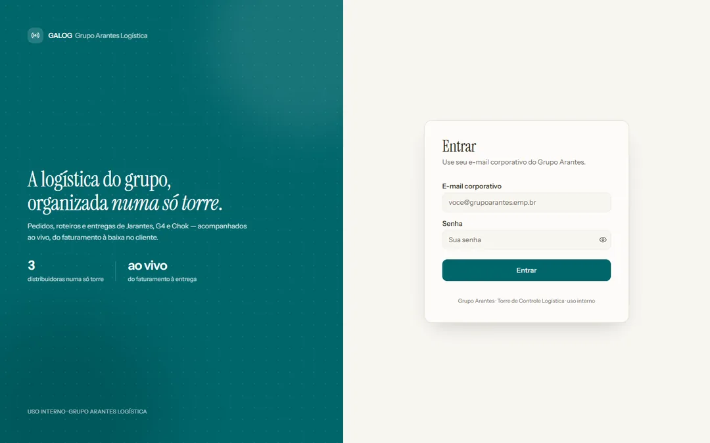
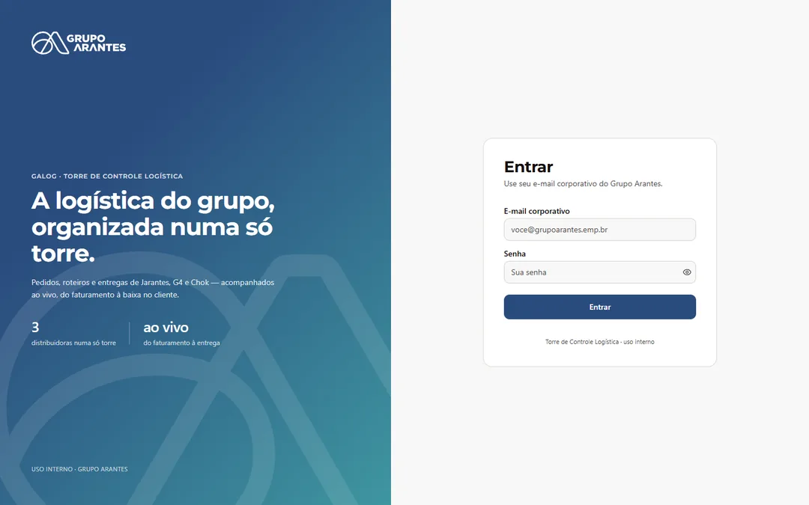
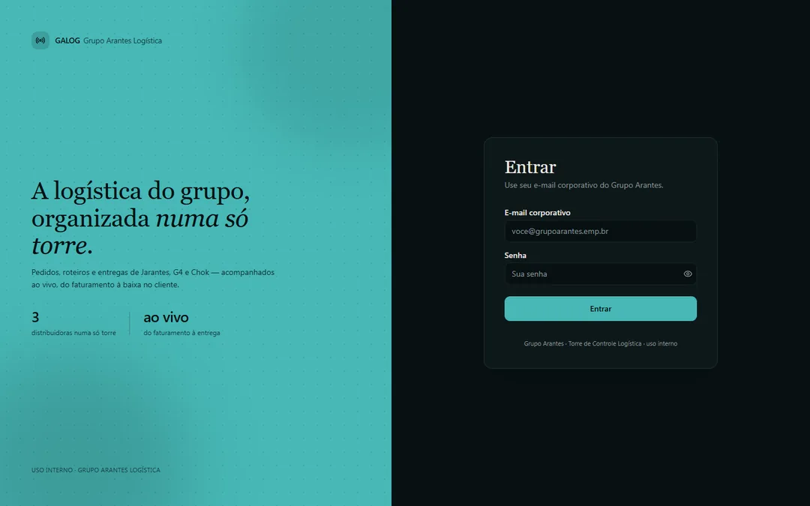
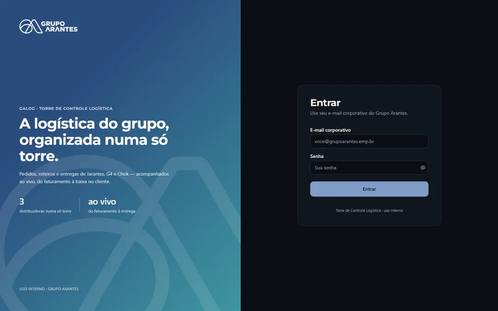
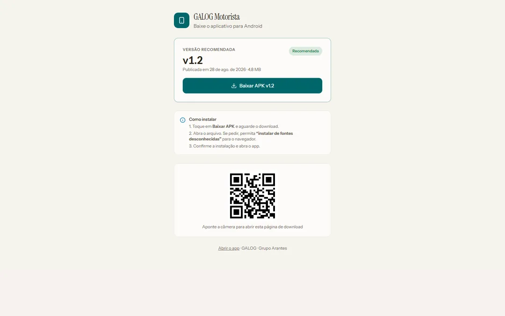
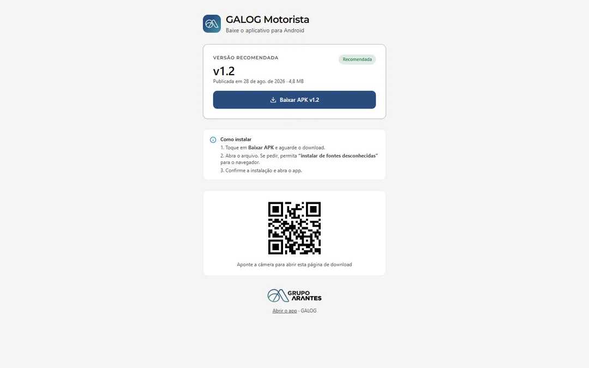

Identidade visual nos apps do grupoUm grupo, uma marca em todas as telas
O padrão sai do Manual de Identidade Visual do Grupo Arantes. Todo app usa as mesmas cores, fontes, logo e tokens, e muda só o nome e uma cor de destaque. Aqui estão as regras, o placar de cada app e o caminho para alinhar o próximo.
Onde cada app está hoje
Nota de 0 a 5 pelo auditor do pacote, que mede cor do app, fontes, logo e favicon, cor só por token e contraste. O quadrado é a cor principal que o app usa hoje.
Medido com auditar-identidade.mjs nas cópias locais dos repositórios em 28/10/2026; o que só subiu para o GitHub pode estar à frente. Ficaram fora da medição o cockpit-dab e o Workflow CSC. Catálogos Chok e Jarantes, LP Chokdoce e INTEGRA-MAGALU falam com o cliente final e seguem a marca da própria empresa, não a do grupo.
O manual manda, e ele desenha uma cor diferente da que escreve
A fonte é o Manual de Identidade Visual feito pela dote.com.br. A intranet não serve de fonte: as cores dela foram amostradas de uma imagem gerada por IA e o logo dela foi redesenhado. No manual, o hex escrito no texto não bate com a cor desenhada nas amostras, no degradê e no próprio logo.
Azul · Pantone 307C
não usar
adotado
Turquesa · Pantone 638C
não usar
adotado
Adotamos o desenhado porque é o que aparece no logo ao lado da interface. Ordem de precedência quando duas fontes discordam: o manual, depois este padrão, depois o design system do app, depois o gosto de cada tela.
Três camadas, do grupo até o cliente
O grupo endossa cada produto: a base é a mesma em todo app, e o que distingue um app do outro é o nome e uma única cor de destaque.
Cores institucionais, neutros, tipografia, logo e regras do manual, cores de status, raio, sombra, ícones Lucide e textos em português. Não se muda no app.
O app troca só quatro tokens (--primary, --primary-hover, --ring, --primary-foreground) com uma cor da paleta fechada. O padrão do grupo é o azul; a turquesa entra como acento.
Um cliente de fora pode trocar a primária em tempo real, por um <style> injetado, nunca inline no <html>. As empresas do grupo (Chok, G4, Jarantes) usam o padrão, sem cor gravada no banco.
Exceção documentada: app só claro v1.1
Um app pode ficar só no tema claro quando isso é decisão registrada no CLAUDE.md dele (a primeira foi a Gestão de Ativos, em 02/10). A exceção vale para o tema, não para a cor: tokens, status e contraste continuam os mesmos.
- Só o
:rootdos tokens, sem bloco.dark, semnext-themesnem botão de tema. - Trava de verdade:
darkMode: ["class"]no Tailwind e nenhuma variantedark:no código. Sem odarkMode, o Tailwind 3 usa o tema do sistema e osdark:voltam a valer. color-scheme: lightno:roote na meta, para campos e barras de rolagem não ficarem escuros.- Bibliotecas com tema próprio fixas no claro (ex.:
<Sonner theme="light" />) e o componenteMarca.so-claro.tsx. - Conferir com
auditar-identidade.mjs . --light-onlyecontraste.mjs src/index.css --light-only.
Paleta institucional e cor de cada app
Cada par de texto e fundo passa de 4,5:1 nos dois temas; o verificador está no pacote. A turquesa pura é só decorativa no tema claro, porque sobre o branco ela dá 2,7:1.
Cor do app (camada 2)
| Cor | Tema claro | Tema escuro | Para |
|---|---|---|---|
| Azul | 216 50% 33% | 216 38% 64% | padrão do grupo: GALOG, GA360, Ativos, Intranet, portais |
| Turquesa | 179 45% 30% | 179 43% 50% | segunda voz (--accent) em todo app |
| Aço | 198 48% 32% | 198 45% 58% | meio do degradê: serviços |
| Grafite | 317 5% 30% | 60 4% 80% | utilitários e admin |
No escuro, o texto sobre a cor do app é escuro (216 40% 8%), não branco. Cor fora desta paleta só em campanha ou data comemorativa, nunca como primária de app.
Neutros
| Token | Claro | Escuro (Noite Arantes) |
|---|---|---|
--background | 60 5% 97% | 216 32% 6% |
--card | 0 0% 100% | 216 26% 9% |
--foreground | 0 17% 7% | 60 5% 92% |
--muted-foreground | 317 5% 30% | 216 10% 64% |
--border | 60 4% 85% | 216 18% 17% |
Status: cores vivas, separadas da marca
| Status | Claro | Escuro | Regra |
|---|---|---|---|
| Sucesso · entregue | 148 58% 30% | 148 45% 52% | Cor, ícone e texto juntos, nunca só a cor. O azul e a turquesa da marca nunca significam status: o azul de status é céu e vivo, o da marca é marinho e sóbrio. Selo padrão: bg-success/10 text-success. |
| Informação · a fazer v1.2 | 205 90% 36% | 196 88% 58% | |
| Atenção | 36 88% 31% | 38 70% 60% | |
| Problema | 1 64% 47% | 2 75% 63% |
Na v1.2 (05/10) o azul de informação no claro passou de 40% para 36% de luminosidade: o selo bg-info/10 text-info dava 4,22:1 e agora dá 4,96:1. Quem copiou a v1 precisa trocar esse token. Cor de série de gráfico ou de categoria no mapa é paleta de dado, documentada no app, e não usa as cores de status.
Gotham no manual, Montserrat e Segoe UI nas telas
O manual pede Gotham para títulos e Segoe UI para uso digital. A Gotham é paga, e a Segoe UI não pode ser embutida em site, só existe no Windows. Nos apps fica assim:
Fontes embutidas no app (@fontsource-variable/montserrat e @fontsource-variable/jetbrains-mono), nunca por link do Google: funcionam sem internet externa. Números de indicador ficam na Segoe UI com algarismos tabulares. Proibidas como fonte principal: Inter, Geist, Space Grotesk, Instrument, Poppins, Plus Jakarta, Fraunces, Arial e serifas de display. Nada abaixo de 11 px; corpo de 14 px (operacional) ou 16 px (celular).
Arquivos oficiais, sem redesenho
A versão horizontal é a preferencial, em vetor (SVG). Em fundo claro vai a colorida; em azul, foto ou tema escuro, a branca. Use o arquivo como imagem, não colado dentro do HTML: o SVG do Illustrator tem classes que colidem quando dois logos entram inline na mesma página.
Os 12 usos proibidos do manual
- distorcer
- rotacionar ou inclinar
- usar na posição vertical
- rotacionar um dos elementos
- trocar a tipografia
- inverter as cores
- trocar as cores
- mudar a proporção entre símbolo e texto
- mudar a disposição dos elementos
- usar em baixa resolução
- aplicar efeitos
- colocar contorno
Marca de produto e cabeçalho do HTML
O produto tem nome próprio em Montserrat 700 mais o endosso "Grupo Arantes" (logo oficial ou texto), no menu lateral e no login. As palavras do logotipo nunca são trocadas pelo nome do produto. Todo app tem lang="pt-BR", título da aba com o nome do produto, o favicon do grupo e theme-color #f8f8f7 no claro e #0a0e14 no escuro. Nada de "Lovable App", "Vite + React" ou ícone de template.
Raio, sombra, ícones e a faixa do topo
| Raio | 0.75rem em app operacional, 0.875rem em institucional e celular. Botão com o raio do tema; pílula só em app institucional ou de celular. |
| Sombra | Tingida de azul no claro (hsl(216 40% 12% / …)), preta no escuro. Painéis separados por borda a 60%. |
| Ícones | lucide-react, traço 2, na cor do texto. Sem emoji na interface. |
| Movimento | Até 300 ms, só posição e opacidade, respeitando "reduzir movimento" do sistema. |
| Degradê | Só em marca, login, ícone de app e faixa do topo. Nunca em fundo de card, de seção ou em texto. |
A faixa do topo, assinatura da marca
O cabeçalho do app é uma faixa em degradê azul sereno (do azul Arantes a um azul-aço, com a turquesa só no fim), um brilho suave à esquerda, o símbolo em contorno bem apagado entrando pela direita e um fio turquesa embaixo. Dentro dela os tokens viram "claro sobre azul", então seletores e botões se ajustam sozinhos. Popover, diálogo e painel lateral abertos dali vão para fora da faixa e seguem o tema normal, e é assim que deve ser. CSS pronto: componentes/faixa-marca.css (classes .faixa-marca e .faixa-marca-lateral).
O que vale em todo app
- Cor só por token
hsl(var(--x))ou classe semântica (bg-primary,text-muted-foreground,bg-success/10). Nenhum hex e nenhumbg-blue-500no componente: quebram o tema escuro e o white-label. - Nomes fixosOs nomes de token do shadcn não mudam, só os valores. Token novo só com prefixo
--brand-*. - Contraste provadoDepois de mexer em token,
node scripts/contraste.mjs src/index.css. Todo par texto e fundo com 4,5:1 ou mais, nos dois temas. - Status pelo significado
text-success, nãotext-green-600. Traduza pela intenção, não pelo matiz. - Exceção explicadaOnde a cor literal é inevitável (camada de mapa, PDF, e-mail, marca de terceiro como Teams), a linha leva
// identidade-ok: motivo. Sem motivo conta como violação. Mapa e canvas leem o token comlerCorToken("--primary").
Tradução das cores cruas
| Era | Passa a ser |
|---|---|
green-*, emerald-* (ok, entregue, aprovado) | success |
amber-*, yellow-*, orange-* (atenção, pendente) | warning |
red-*, rose-* (erro, atrasado) | destructive |
blue-*, sky-*, cyan-* quando é "a fazer" ou "em andamento" | info |
blue-*, indigo-*, purple-*, violet-* quando era a cor do app | primary |
slate-*, gray-*, zinc-*, neutral-* | muted, muted-foreground, border, foreground |
bg-green-100 text-green-800 (selo) | bg-success/10 text-success |
dark:bg-… / dark:text-… do mesmo elemento | remover: o token já muda sozinho no escuro |
Onde o matiz é ambíguo (um laranja que significava "atrasado"), decida pelo significado de negócio e anote no PR. Comece pelos arquivos que o auditor aponta como mais sujos; não faça troca cega em massa.
Alinhar um app leva de meio dia a um dia
Tudo está num pacote pronto: C:\GIT GA\GALOG\docs\identidade-visual\, com o guia completo (README v1.2), tokens em CSS e em JSON, componentes React, a faixa do topo, os logos e ícones, e os dois scripts de conferência. A mesma base está na skill grupo-arantes-design do Claude Code, que qualquer sessão de app do grupo enxerga.
- Fotografe o antes e meça
node scripts/auditar-identidade.mjs .na raiz do app. Ache quem injeta cor em tempo de execução (hook de tenant) e quem pinta mapa, gráfico ou PDF. Se o app tem tabela de empresas com cor, veja quais empresas do grupo têm cor gravada. - Troque as fontes
Instale Montserrat e JetBrains Mono embutidas, aponte o texto para a pilha Segoe UI no Tailwind e deixe a mono só para dado de máquina. Remova as fontes antigas e os ajustes de fonte órfãos.
- Cole os tokens e escolha a cor do app
Os tokens abaixo vão no lugar do
:roote do.dark, mantendo os tokens próprios do app. Troque só os quatro da cor do app, se ele não for azul. Rode ocontraste.mjs. - Coloque a marca
SVGs em
src/assets/brand/, ícones empublic/, componenteMarca.tsx(ouMarca.so-claro.tsx), cabeçalho do HTML, login com degradê e grafismo, e a faixa do topo. - Troque a cor fora do token
É o grosso do trabalho em app antigo. Use a tabela de tradução, comece pelos arquivos mais sujos e marque as exceções com
identidade-ok. - Confira e avise antes de publicar
Checklist abaixo. Zere a cor gravada das empresas do grupo no mesmo deploy. A troca visual só vai ao ar depois do aviso aos usuários.
O núcleo do grupo, pronto para colar
Formato shadcn/ui: tripleto HSL usado como hsl(var(--token)). Vai dentro de @layer base no CSS global do app. Num app só claro, cole apenas o :root.
:root {
/* Primitivos de marca: só logo, degradê, gráfico e fundo de marca */
--brand-azul: 216 50% 33%; /* #2A4C7F, Pantone 307C */
--brand-turquesa: 179 43% 47%; /* #44ABAA, Pantone 638C; nunca texto no claro */
--brand-grafite: 317 5% 30%; /* #4F484D */
--brand-preto: 0 17% 7%; /* #150F0F */
--brand-fundo: 60 4% 91%; /* #E8E8E6 */
--brand-gradient: linear-gradient(135deg, hsl(216 50% 33%) 0%, hsl(216 50% 33%) 30%, hsl(179 43% 47%) 120%);
/* Neutros */
--background: 60 5% 97%;
--foreground: 0 17% 7%;
--card: 0 0% 100%;
--card-foreground: 0 17% 7%;
--popover: 0 0% 100%;
--popover-foreground: 0 17% 7%;
--muted: 60 4% 91%;
--muted-foreground: 317 5% 30%;
--border: 60 4% 85%;
--input: 60 4% 82%;
/* Cor do app (camada 2): padrão azul */
--primary: 216 50% 33%;
--primary-foreground: 0 0% 100%;
--primary-hover: 216 50% 27%;
--ring: 216 50% 33%;
--secondary: 216 30% 93%;
--secondary-foreground: 216 50% 24%;
--secondary-hover: 216 28% 89%;
/* Segunda voz: turquesa em tom legível */
--accent: 179 45% 30%;
--accent-foreground: 0 0% 100%;
--accent-hover: 179 45% 25%;
/* Status: vivos, nunca no matiz da marca */
--success: 148 58% 30%;
--success-foreground: 0 0% 100%;
--warning: 36 88% 31%;
--warning-foreground: 0 0% 100%;
--destructive: 1 64% 47%;
--destructive-foreground: 0 0% 100%;
--info: 205 90% 36%; /* v1.2: era 40% */
--info-foreground: 0 0% 100%;
--radius: 0.75rem; /* institucional e celular: 0.875rem */
--shadow-sm: 0 1px 3px hsl(216 40% 12% / 0.05);
--shadow-md: 0 4px 12px hsl(216 40% 12% / 0.08);
--shadow-lg: 0 12px 40px hsl(216 40% 12% / 0.12);
--shadow-xl: 0 24px 60px hsl(216 40% 12% / 0.16);
}
.dark {
/* Noite Arantes */
--background: 216 32% 6%;
--foreground: 60 5% 92%;
--card: 216 26% 9%;
--card-foreground: 60 5% 92%;
--popover: 216 24% 11%;
--popover-foreground: 60 5% 92%;
--muted: 216 18% 13%;
--muted-foreground: 216 10% 64%;
--border: 216 18% 17%;
--input: 216 18% 20%;
--primary: 216 38% 64%;
--primary-foreground: 216 40% 8%;
--primary-hover: 216 42% 70%;
--ring: 216 38% 64%;
--secondary: 216 30% 16%;
--secondary-foreground: 216 40% 80%;
--secondary-hover: 216 30% 20%;
--accent: 179 43% 50%;
--accent-foreground: 216 40% 8%;
--accent-hover: 179 45% 57%;
--success: 148 45% 52%;
--success-foreground: 150 60% 6%;
--warning: 38 70% 60%;
--warning-foreground: 36 70% 8%;
--destructive: 2 75% 63%;
--destructive-foreground: 0 60% 8%;
--info: 196 88% 58%;
--info-foreground: 205 80% 8%;
--shadow-sm: 0 1px 3px rgb(0 0 0 / 0.3);
--shadow-md: 0 4px 12px rgb(0 0 0 / 0.4);
--shadow-lg: 0 12px 40px rgb(0 0 0 / 0.5);
--shadow-xl: 0 24px 60px rgb(0 0 0 / 0.6);
}
// theme.extend
fontFamily: {
sans: ['"Segoe UI"', "system-ui", "-apple-system", "BlinkMacSystemFont", "Roboto", '"Helvetica Neue"', "Arial", "sans-serif"],
display: ['"Montserrat Variable"', "Montserrat", '"Segoe UI"', "system-ui", "sans-serif"],
mono: ['"JetBrains Mono Variable"', "ui-monospace", "SFMono-Regular", "Menlo", "Monaco", "Consolas", "monospace"],
},
colors: {
brand: {
azul: "hsl(var(--brand-azul))",
turquesa: "hsl(var(--brand-turquesa))",
grafite: "hsl(var(--brand-grafite))",
preto: "hsl(var(--brand-preto))",
fundo: "hsl(var(--brand-fundo))",
},
},
backgroundImage: { "brand-gradient": "var(--brand-gradient)" },
Antes de publicar
contraste.mjssem nenhum par abaixo de 4,5:1, claro e escuroauditar-identidade.mjscom 5 de 5, exceções marcadas com motivo- Typecheck, lint, testes e build verdes
- Claro e escuro, computador e celular: login, tela principal, diálogo, tabela, gráfico e mapa
- Nenhuma sobra das fontes e cores antigas na busca do código
- Favicon, título da aba,
lang="pt-BR"etheme-colorcorretos - Nenhuma empresa do grupo com cor gravada no banco
- Antes e depois fotografados
Depois que o app chega a 5 de 5, o auditor pode entrar no CI com --strict, que falha a build se algum eixo regredir.
O GALOG antes e depois
No ar desde 29/09/2026 em galog.grupoarantes.emp.br.






Armadilhas que o piloto já pagou
- Cor gravada na tabela de empresas sobrepõe o padrão: a Chok tinha verde, e todos os botões dela saíram verdes em cima do azul novo.
- Cor injetada inline no
<html>vence o tema escuro e fica ilegível. Use<style>com:roote:root.dark. - Mapbox e canvas não leem
var(--x): a camada some sem erro no console. - Montserrat em número desalinha a tabela; números ficam na Segoe UI.
- Fonte antiga de um peso só deixava o negrito "mudo"; com a Montserrat os títulos passam a pesar. Revise as telas.
- Azul de informação igual ao azul da marca mistura "marca" com "a fazer".
Quem vem a seguir
Concluir
- GALOG: marcar as cores de mapa e impressão com
identidade-ok - GA360: trocar o
--infoe as classes de cor crua, começando pelos arquivos mais sujos - GA-Workflow: hex e contraste
Próximos
- Intranet (fecha a pendência de marca dela)
- Central DP
- cockpit-ga e pagamentos
- RouteGA
Decidir antes
- CRM (marca DEX) e Smartzap (marca SZ): produto do grupo ou marca própria?
- Chokdoce e catálogos seguem a marca da empresa
Como outras empresas resolveram o mesmo problema
Um sinal a mais de desposicionamento: grupoarantes.com é de outro Grupo Arantes, de construção civil em Itamogi (MG). A marca precisa aparecer com o logo, não só com o nome.
O que precisamos do marketing
- Logo vertical em vetor e os vetores da Chok Agro e da G4 sozinha (hoje só em PNG). Os links de download do manual (drive.dote.com.br) estão fora do ar.
- O degradê dentro do logo vetorial vai de #609C9C a #24226E, mais escuro que a amostra do manual (#2A4C7F). Confirmar qual é o oficial.
- Confirmar os hex digitais: o texto do manual diz #31729B e #00B9CF, a arte usa #2A4C7F e #44ABAA.
- Corrigir o hex do cinza, que repete o da turquesa.
- Fontes: o texto diz Gotham e Segoe UI, a miniatura do pacote de fontes mostra Filson Soft e Calibri.
- Aval para usar o símbolo sozinho em favicon e ícone de app; o manual não mostra esse uso.
- Tamanho mínimo da horizontal: o texto diz 120 px e o diagrama diz 100 px (seguimos 120 px).
- Licença da Gotham, se quiserem a fonte original nas telas.
| Versão | Data | O que mudou |
|---|---|---|
| 1.0 | 02/10/2026 | Núcleo, faixa do topo, white-label, auditor. Base: piloto GALOG de 28 e 29/09. |
| 1.1 | 02/10/2026 | Exceção "app só claro" (primeira: Gestão de Ativos) e conferência própria para ela. |
| 1.2 | 05/10/2026 | --info claro de 40% para 36%; conferência do selo de status; Marca.so-claro.tsx; nota para app com tokens em hex no Tailwind. |
O padrão só muda por decisão registrada, nunca por cópia local de token. Pedidos de mudança vão ao William Cintra (TI), com o caso concreto. Onde está tudo: pacote C:\GIT GA\GALOG\docs\identidade-visual\ e skill ~/.claude/skills/grupo-arantes-design.